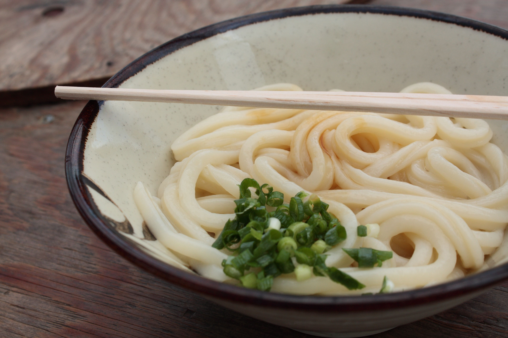

Udon

Description
Udon is a thick noodle made from wheat flour, used in Japanese cuisine. There is a variety of ways it is prepared and served. Its simplest form is in a soup as kake udon with a mild broth called kakejiru made from dashi, soy sauce, and mirin. It is usually topped with thinly chopped scallions.
Ingredients
- Udon flour
- Water
- Salt
- Flour for dusting
Steps
- Combine water and salt to make a brine solution. Add udon flour to a separate bowl and slowly add brine little by little.
- Gently mix in brine by hand until completely absorbed into the flour. When the consistency is dry and crumbly, form the dough into a ball.
- Place dough on a flat surface lightly dusted with flour. Knead the dough.
- When the dough is a nice, stretchy consistency, cover with plastic wrap (to prevent drying) and allow to rest for two hours.
- Place rested dough on a floured flat surface and roll out into a square shape. Wind the rolled out dough around the rolling pin and proceed to roll again on the pin to flatten further. Unroll the dough from the pin, and continue using the rolling pin to flatten until the dough reaches 3mm in thickness.
- Fold dough gently into thirds. Slice across folded dough with a large chopping knife in 3mm increments, being as consistent as possible, so each slice is a folded up udon noodle. To make sure that the noodles all finish cooking at the same time, ensure the width of the noodles are as similar in size as possible. To prevent the noodles from sticking to each other after cutting, unravel them and place them flat before boiling.
- Boil noodles for 15-18 minutes in about 4L of water. Make sure to not let the noodles boil over. Drain and rinse in water, then use in any udon dish.